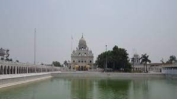

Pithoragah
Pithoragarh district is the easternmost district in the state of Uttarakhand. It is located in the Himalayas and has an area of 7,110 km² and a population of 483,439. The city of Pithoragarh, located in Saur Valley, is its headquarters. The district is within the Kumaon division of Uttarakhand state.
Bageshwar
Bageshwar is a district of Uttarakhand state in northern India. The town of Bageshwar is the district headquarters. Prior to its establishment as a district in 1997 it was part of Almora district.
Almora
Almora is a district in the Kumaon Division of Uttarakhand state, India. The headquarters is at Almora. It is 1,638 meters above sea level. The neighbouring regions are Pithoragarh district to the east, Chamoli district to the west, Bageshwar district to the north and Nainital district to the south.
Nainital
Nainital district is a district in Kumaon division which is a part of Uttarakhand state, India. The headquarters is at Nainital. Nainital District is located in Kumaon Division, and is bounded on the north by the Almora District and on the south by the Udham Singh Nagar District.
Champawat
Champawat district is a district of Uttarakhand state in northern India. The town of Champawat is the administrative headquarters. The district of Champawat constituted in the year 1997. The district is divided into five tehsils: Barakot, Lohaghat, Pati, Purnagiri

Udham Singh Nagar
Tehri Garhwal is a district in the hill state of Uttarakhand, India. Its administrative headquarters is at New Tehri. The district has a population of 618, 931, a 2.35% increase over the previous decade.
Folk Dances
1.Pandav Nritya
The Pandava Nritya tells the tale of the five heroes of Hindu mythology, the Pandava brothers of Mahabharata, from start to end. Through this ecstatic dance, the various stages of their life are portrayed, performed on the drum beats. It is a 10 - 12 days dance-drama celebration performed between November to February every year. It is believed that the energies of the five Pandavas enter the body of performing artists during the stage performance. On the last day of Pandava Nritya, a grand feast is organised for the villagers.
2.Bhotia Dance
The Bhotiyas are an ancient tribe of Uttarakhand, and the namesake dance is performed by them is closely linked to their death rituals. It is a common belief among the Bhotiyas that the soul of the dead lives in the body of a sheep or goat after the human body dies. By performing the Bhotiya dance, the soul of the dead can be liberated from the animal’s body. Call it the dance of the dead!
3.Cholia Dance
Choliya dance is the sword dance, meant to depict the martial art traditions of the Kumaoni tribe. This dance form is as old as a thousand years, and it is performed during the local Rajput weddings. The Choliya dancers are equipped with swords and shields, regional brass instruments including Turi and Ransing, and percussion instruments like dhol and damaru etc.
The dancers dress like the Kumaon warriors and engage in mock sword fights with duly synchronised twists and turns of the body.
4.Jhora Dance
Jhora dance is a springtime celebration performed by the local people by moving around in circles. It is a highly popular dance in the Kumaon Himalayas. The USP of this dance is that it aims to break caste barriers, thus allowing both higher and lower caste people to perform it together. Besides springtime, this dance is also performed during weddings and local fairs.
5.Mukhota Dance
It is another interesting dance performed at a fair organised in the month of Vaishakha. The fair starts from Vaishakha Sankranti (the day when the Sun enters a new sign) and the worship of Bhumiyal Devta. People offer ground rice preparations every day during this fest. Participants wear traditional clothing and masks that are made to resemble various deities and demons.
Folk Song
1.Basanti
Basanti is one of the most popular folk songs in Uttarakhand which is sung for the arrival of the spring season when the flowers would bloom and would add glare to the beauty of the hill state. Basanti of Uttarakhand is very special song for all the citizens of the state.
2.Bajuband
Bajuband of Uttarakhand is mellifluous folk song and has a deep meaning. Bajuband is a romantic song of shepherds community and depicts their love and sacrifice for their beloved. Bajuband of Uttarakhand is widely known across the whole state.
3.Chounphula
'Chounphula' is a spinning dance performed by all sections of the community, at night, in groups by men and women. 'Chounphula' folk songs are composed for the appreciation of nature during various occasions. Chounphula, Jhumeila and Daryola folk songs all derive their names from the concerned folk dances.
4.Jagar
Jagar (Devanagari: जागर) is a ritualized form of ancestor spirit worship which is practiced in the hills of Uttarakhand, both in Kumaon and Garhwal..
5.Mangal
Mangal of Uttarakhand is the folk song of the Garhwal region of Uttarakhand. These are the traditional songs that are sung when the wedding rituals are on. These songs are considered to be sacred and sung along with the shlokas chanted by the priests.
6.Jhumeila
Jhumeila is a type of folk song sung in Uttarakhand. Jhumeila is sung to praise the bounty nature all across the Himalayan foothill. Jhumeila has a very deep meaning as it describes the whole natural flora and fauna of the state along with the seasonal changes that it undergoes.